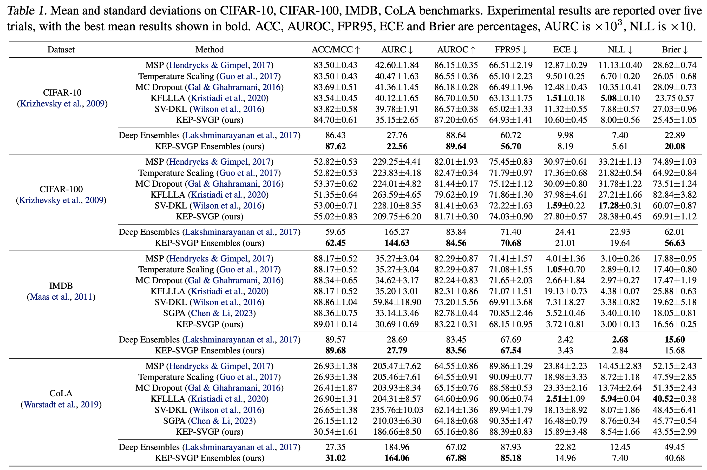

Abstract
While the great capability of Transformers significantly boosts prediction accuracy, it could also yield overconfident predictions and require calibrated uncertainty estimation, which can be commonly tackled by Gaussian processes (GPs).
Existing works apply GPs with symmetric kernels under variational inference to the attention kernel; however, omitting the fact that attention kernels are in essence asymmetric.
Moreover, the complexity of deriving the GP posteriors remains high for large-scale data.
In this work, we propose Kernel-Eigen Pair Sparse Variational Gaussian Processes (KEP-SVGP) for building uncertainty-aware self-attention where the asymmetry of attention kernels is tackled by Kernel SVD (KSVD) and a reduced complexity is acquired.
Through KEP-SVGP,
i) the SVGP pair induced by the two sets of singular vectors from KSVD w.r.t. the attention kernel fully characterizes the asymmetry;
ii) using only a small set of adjoint eigenfunctions from KSVD, the derivation of SVGP posteriors can be based on the inversion of a diagonal matrix containing singular values, contributing to a reduction in time complexity;
iii) an evidence lower bound is derived so that variational parameters and network weights can be optimized with it.
Experiments verify our excellent performances and efficiency on in-distribution, distribution-shift and out-of-distribution benchmarks.
Background
Gaussian Processes
A Gaussian Process (GP) represents a distribution, denoted by

, over real-valued functions
:\mathcal{X}\to\mathbb{R})
defined on an input domain

. We have the prior process as follows:
\sim\mathcal{GP}
(0,\kappa(\cdot,\cdot))
\Rightarrow
\boldsymbol{f}\sim\mathcal{N}(\boldsymbol{0}, K_{XX}),\quad
K_{XX}:=[\kappa(\boldsymbol{x}_i,\boldsymbol{x}_j)]\in\mathbb{R}^{N\times N}
\\
& \text{Posterior:}\quad
\boldsymbol{f}^*|X^*,X,\boldsymbol{y}
\sim \mathcal{N}\left(K_{X^*X}{(K_{XX}+\sigma^2I_N)^{-1}}\boldsymbol{y},
K_{X^*X^*}-K_{X^*X}{\color{red}(K_{XX}+\sigma^2I_N)^{-1}}K_{XX^*}\right),
\end{align*})
where
,\ldots, f(\boldsymbol{x}_N)]^\top\in\mathbb{R}^N)
and the GP is with a symmetric positive-definite covariance function parameterized by a kernel function
:\mathcal{X}\times\mathcal{X}\to\mathbb{R})
.
The posterior process of

is
with time complexity
})
, due to the inversion of the kernel matrix.
Sparse Variational Gaussian Processes
Sparse variational Gaussian processes (SVGP) use

inducing points

to represent the whole dataset,
)
 \\ \boldsymbol{u}
\end{pmatrix}
\sim
\mathcal{GP}
\left( \boldsymbol{0},
\begin{bmatrix}
\kappa(\cdot,\cdot') & \boldsymbol{\kappa}_{\cdot\boldsymbol{u}}
\\
\boldsymbol{\kappa}_{\boldsymbol{u}\cdot'} & K_{\boldsymbol{uu}}
\end{bmatrix}
\right)
\\
& \text{Posterior:}\quad
f(\cdot)
\sim \mathcal{GP}\left(\boldsymbol{\kappa}_{\cdot \boldsymbol{u}}
K_{\boldsymbol{uu}^{-1}}\boldsymbol{m_u},
\,\,
\kappa(\cdot,\cdot') - \boldsymbol{\kappa}_{\cdot\boldsymbol{u}}
{\color{red}K_{\boldsymbol{uu}}^{-1}}
(K_{\boldsymbol{uu}}-S_{\boldsymbol{uu}})
K_{\boldsymbol{uu}}^{-1}\boldsymbol{\kappa}_{\boldsymbol{u}\cdot'}
\right),
\end{align*}
)
where the variational posterior is based on
)=\int \mathrm{p}(f(\cdot)|\boldsymbol{u})\mathrm{q}(\boldsymbol{u})\,\mathrm{d}\boldsymbol{u})
with
=\mathcal{N}(\boldsymbol{m_u},S_{\boldsymbol{uu}}))
being the variational distribuition of the inducing points. The posteior is now with time complexity
,\, M<N})
.
SVGPs with Kernel-Eigen Features
We can further reduce the time compleixty of the posterior process by choosing kernel-eigen features as the inducing variables.
Define
)
as the

-th eigenfunction of the kernel
)
with eigenvalue

, then we have

\\
& \text{Posterior:}\quad
\boldsymbol{f}
\sim
\mathcal{N}
\left(
(H\Lambda)\Lambda^{-1}\boldsymbol{m_u}
\,\,
K_{XX} - (H\Lambda){\color{red}\Lambda^{-1}}(\Lambda-S_{\boldsymbol{uu}})\Lambda^{-1}(\Lambda H^\top)
\right)
,
\end{align*}
)
where

is the eigenvalue matrix, and

are the eigenvectors.
The posteior is now with time complexity
,\, M<N})
.
Canonical Self-Attention is with Asymmetric Kernel
Let

be the input data sequence.
In self-attention, the queries, keys and values output the linear projections of the input sequence:
 = W_q \boldsymbol{x}_i,\quad k(\boldsymbol{x}_i) = W_k \boldsymbol{x}_i,\quad
v(\boldsymbol{x}_i) = W_v \boldsymbol{x}_i.)
The canonical self-attention is with "softmax" activation applied for bringing non-linearity and positives, yielding the attention weights:
 = \text{softmax} \left( \left< W_q \boldsymbol{x}_i, W_k \boldsymbol{x}_j\right> / \sqrt{d_k} \right), \quad i,j=1,\ldots,N,)
where
:\mathbb{R}^d\times\mathbb{R}^d\mapsto \mathbb{R})
serves as the kernel function.
Notice that in general,

,
leading to
an asymmeyric kernel
where
\neq \kappa_\text{att}(\boldsymbol{x}_j, \boldsymbol{x}_i))
.
Please refer to
Primal-Attention (NeurIPS 2023) for more details.
Self-Attention with Kernel SVD
Canonical self-attention can be represented by the dual representation of the kernel SVD (KSVD) problem. Please refer to
Primal-Attention (NeurIPS 2023) for more details.
Remark 3.3 (Primal-dual representations of KSVD in self-attention).
In the KSVD formulations for the asymmetric kernel matrix in self-attention, with KKT conditions, the projection scores can be either represented in the primal using explicit feature maps or in the dual using kernel functions:
 = W_{e|X}^\top \phi_q(\boldsymbol{x})
\\
r(\boldsymbol{x}) = W_{r|X}^\top \phi_k(\boldsymbol{x})
\end{cases},
\quad
\text{Dual:}\,
\begin{cases}
e(\boldsymbol{x}) = \sum\nolimits_{j=1}^N \boldsymbol{h}_{r_j} \kappa_\text{att}(\boldsymbol{x},\boldsymbol{x}_j)
\\
r(\boldsymbol{x}) = \sum\nolimits_{i=1}^N \boldsymbol{h}_{e_i} \kappa_\text{att}(\boldsymbol{x}_i,\boldsymbol{x})
\end{cases}.
)
where

,

are dual variables with column-wisely the left and right singular vectors of the attention matrix

.
Method
Pair of Adjoint Eigenfunctions for Self-Attention
Self-Attention corresponds to a shifted eigenvalue problem w.r.t. the attention matrix [
Primal-Attention (NeurIPS 2023)]:

leading to the two eigendecompositions w.r.t. symmetric kernel

,

:
 H_e=H_e \Lambda^2,
\\
\left(K_{\text{att}}^\top K_{\text{att}}\right) H_r=H_r\Lambda^2,
\end{align*}
)
corresponding to two SVGPs with adjoint kernel-eigen features

\quad
\Rightarrow
\quad
\text{Posterior:}\quad
\boldsymbol{f}^e
\sim
\mathcal{N}
\Big(
\underbrace{e(X)\Lambda^{-1}\boldsymbol{m_u}}_{\boldsymbol{m}^e}
\,\,
\underbrace{e(X)\Lambda^{-2}S_{\boldsymbol{uu}}e(X)^\top}_{\Sigma^e:=L^e {L^e}^\top}
\Big),
\\
& \text{Prior:}\quad
\begin{pmatrix}
\boldsymbol{f}^r \\ \boldsymbol{u}^r
\end{pmatrix}
\sim
\mathcal{GP}
\left(
\begin{bmatrix}
K_{\text{att}}^\top K_{\text{att}} & H_r\Lambda^2
\\
\Lambda^2 H_r^\top & \Lambda^2
\end{bmatrix}
\right)
\quad
\Rightarrow
\quad
\text{Posterior:}
\quad
\boldsymbol{f}^r
\sim
\mathcal{N}
\Big(
\underbrace{r(X)\Lambda^{-1}\boldsymbol{m_u}}_{\boldsymbol{m}^r}
\,\,
\underbrace{r(X)\Lambda^{-2}S_{\boldsymbol{uu}}r(X)^\top}_{\Sigma^r:=L^r {L^r}^\top}
\Big),
\end{align*}
)
Kernel-Eigen Pair Sparse Variational Gaussian Processes
The outputs of the two SVGPs are obtained by the Monte-Carlo sampling:
,
\\
F^r=\boldsymbol{m}^r + L^r \boldsymbol{\epsilon},\quad \boldsymbol{\epsilon}\sim\mathcal{N}(0,\boldsymbol{I}_N),
\end{align*}
)
where

are the Cholesky factor of

respectively.
Finally, we merge the outputs of the two SVGPs either by addition or concatenation schemes:

The final outputs of the self-attention are

Results
Please refer to our paper for more experiments.
Uncertainty Awareness on In-distribution Data

Resources
BibTeX
If you find this work useful for your research, please consider citing:
@inproceedings{chen2024self,
title={Self-Attention through Kernel-Eigen Pair Sparse Variational Gaussian Processes},
author={Chen, Yingyi and Tao, Qinghua and Tonin, Francesco and Suykens, Johan A.K.},
booktitle={International Conference on Machine Learning},
year={2024}
}
Acknowledgements
This work is jointly supported by the European Research Council under the European Union’s Horizon 2020 research and innovation program/ERC Advanced Grant E-DUALITY (787960), iBOF project Tensor Tools for Taming the Curse (3E221427), Research Council KU Leuven: Optimization framework for deep kernel machines C14/18/068, KU Leuven Grant CoE PFV/10/002, The Research Foundation–Flanders (FWO) projects: GOA4917N (Deep Restricted kernel Machines: Methods and Foundations), Ph.D./Postdoctoral grant, the Flemish Government (AI Research Program), EU H2020 ICT-48 Network TAILOR (Foundations of Trustworthy AI-Integrating Reasoning, Learning and Optimization), Leuven.AI Institute.